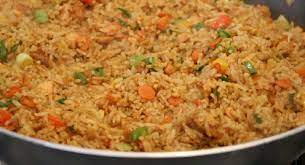

Fried Rice

Description
This is a recipe teaching you how to make fried rice
Ingredients
- Boiled rice
- Mixed peppers
- Spring onions
- Sausage
- Eggs
- Soy sauce
- Salt
- Curry powder
- Vegetable oil
- Maggi cube
Steps
- Heat a wok with oil on the highest flame.
- Add onions and stir continuously for 2-3 minutes.
- Add sausage and stir until it turns golden brown.
- Add pepper, maggi cube and curry powder.
- Break eggs and slip into pan and stir.
- Reduce the heat and add boiled rice to the mixture.
- Add soy sauce and stir for about 5 minutes.
- Serve with shito or salad
All credit goes to this recipe.